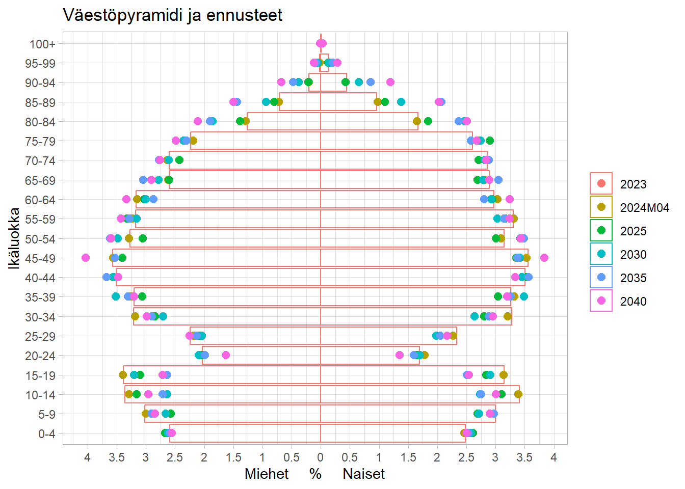

13 Väestöskenaario
Tilastokeskus laatii säännöllisesti kuntakohtaisen väestöennusteen. Ennuste on trendilaskelma, joka pohjautuu havaintoihin syntyvyyden, kuolevuuden ja muuttoliikkeen menneestä kehityksestä.
Kaupunki päivittää vuosittain oman väestöennusteensa, joka pohjautuu kaupunkistrategian mukaiseen tavoiteltuun kehitykseen.
13.1 Eri väestöskenaariot ja ennakkotieto
13.2 Väestöpyramidi nykytilanteella ja Tilastokeskuksen ennustevuosina
